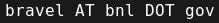

{kind=link}
I am a physicist in the Synchrotron Science Group in the Materials Measurement Division of the Materials Measurement Laboratory at The National Institute of Standards and Technology My group is stationed at Brookhaven National Laboratory. I was the local contact of Beamline X23A2, an XAFS beamline at the now-closed National Synchrotron Light Source. I will be the local contact for BMM, an XAFS and XRD beamline scheduled to begin operations at National Synchrotron Light Source-II in late 2016.
This link explains my fascination with Greek mythology.
| contact | info |
|---|---|
| Post | Building 535 Brookhaven National Laboratory Upton NY 11973 USA |
| Shipping | Bruce Ravel/BMM/6BM NSLS Building 745 Brookhaven National Laboratory Upton NY 11973 USA (My shipping address will change soon with the closure of NSLS) |
| Software support | Direct all questions about Athena and Artemis to the Ifeffit mailing list |
|  | |
| CV | My CV, as a PDF file |
| GitHub | https://github.com/bruceravel |
| Weather | My
home weather station (updates every 4 hours) |
I participate only to a limited extent in most "social
media". I silently ignore contact requests involving
Facebook, LinkedIn, ResearchGate, Google+, and most other
such crap
fine websites.
Software and writing projects
- Demeter: XAS Data Analysis and Processing
- XAS Education materials
- XAS Education presentations
- Synchrotron pop-up book
- XAS Data Interchange
- Feff 8.5 for EXAFS
- HERFD with a bent Laue analyzer